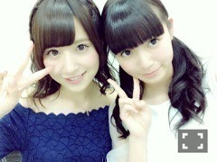

| 2015/07 15 Wed | ひめたん-0o0-その556 |

こんばんは♡
度々お知らせ失礼します(´｡•ω•｡`)
なんと、
次回の「金つぶ」に
能條・中元がゲストとして
出演することになりました～！
わーいラジオだー♪
この前はらじらーに
美彩先輩が来てくれて
今度は私が金つぶにおじゃまして......♡
今から楽しみ！
みなさん是非聴いてください！
えーここからは
公式サイトから引用させていただきます。
番組では、出演メンバーへの質問を
募集しています！
ニューシングル「太陽ノック」、
映画「悲しみの忘れ方」
ドラマ「初森ベマーズ」のことから、
プライベートなことまで
あなたが気になる乃木坂４６に関する質問を
お送りください！
受付メールアドレスは、
あなたからの声を、お待ちしています！
bayfm 「金つぶ」
"真夏にノック！乃木坂46スペシャル"
2015年7月17日（金）20時～21時20分
愛未もいて心強い♡
絶対楽しい放送になりますo(^▽^)o
おたよりお待ちしてます！

さらにもう一つお知らせ。
この度、TopYellさんで
私の連載がスタートします！！
またひとつ夢が叶った( ´•̥ω•̥` )嬉しい♡
第1弾を昨日撮影してきたのですが
うん、なかなかの挑戦でした。
TopYellさんのTwitterも見てみて～
来月号から連載スタートです
よろしくお願いします！
えー、最後に
今朝は急な告知だったにも関わらず
Oha!4の感想たくさんありがとう( ˇωˇ )
本日公式サイトにて
「別れ際、もっと好きになる」MV予告編
公開されたのでそちらもぜひ。
何だろう、独特の世界観を
味わっていただけたらいいな～
今までの乃木坂にはないMV！
メンバーもガラッと変わって
アンダーメンバーの新たな一面を
見ていただける作品だと思います☆
質問返しは落ち着いたら
するから待っててね(´,,•ω•,,｀)
らじらーのゲスト誰かなー？♡笑
(＊´・ω・＊)
コメント(551)
2015/07/15 23:36